Chapter 17
Object-Oriented Design
Chapter Goals
- To learn about the software life cycle
- To learn how to discover new classes and methods
- To understand the use of CRC cards for class discovery
- To be able to identify inheritance, aggregation, and dependency
relationships between classes
- To master the use of UML class diagrams to describe class
relationships
- To learn how to use object-oriented design to build complex
programs
The Software Life Cycle
- Encompasses all activities from initial analysis until
obsolescence
- Formal process for software development
- Describes phases of the development process
- Gives guidelines for how to carry out the phases
- Development process
- Analysis
- Design
- Implementation
- Testing
- Deployment
Analysis
- Decide what the project is suppose to do
- Do not think about how the program will accomplish tasks
- Output: requirements document
- Describes what program will do once completed
- User manual: tells how user will operate program
- Performance criteria
Design
- Plan how to implement the system
- Discover structures that underlie problem to be solved
- Decide what classes and methods you need
- Output:
- Description of classes and methods
- Diagrams showing the relationships among the classes
Implementation
- Write and compile the code
- Code implements classes and methods discovered in the design phase
- Output: completed program
Testing
- Run tests to verify the program works correctly
- Output: a report of the tests and their results
Deployment
- Users install program
- Users use program for its intended purpose
The Waterfall Model
- Sequential process of analysis, design, implementation, testing,
and deployment
- When rigidly applied, waterfall model did not work
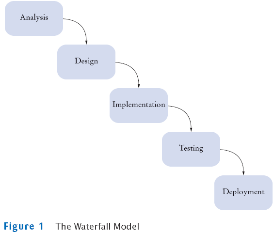
The Spiral Model
- Breaks development process down into multiple phases
- Early phases focus on the construction of prototypes
- Lessons learned from development of one prototype can be applied
to the next iteration
- Problem: can lead to many iterations, and process can take too
long to complete
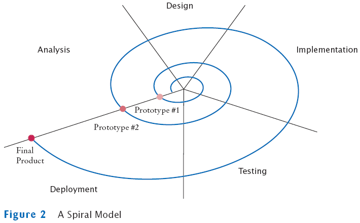
Activity Levels in the Rational Unified Process
- Development process methodology by the inventors of UML
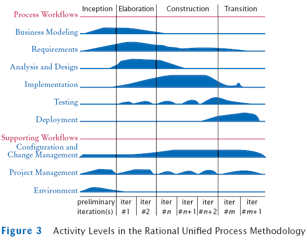
Extreme Programming
- Strives for simplicity
- Removes formal structure
- Focuses on best practices
- Realistic planning
- Small releases
- Metaphor
- Simplicity
- Testing
- Refactoring
- Pair programming
- Collective ownership
- Continuous integration
- 40-hour week
- On-site customer
- Coding standards
Extreme Programming
- Realistic planning
- Customers make business decisions
- Programmers make technical decisions
- Update plan when it conflicts with reality
- Small releases
- Release a useful system quickly
- Release updates on a very short cycle
- Metaphor
- Programmers have a simple shared story that explains the
system
Extreme Programming
- Simplicity
- Design as simply as possible instead of preparing for future
complexities
- Testing
- Programmers and customers write test cases
- Test continuously
- Refactoring
- Restructure the system continuously to improve code and
eliminate duplication
Extreme Programming
- Pair programming
- Two programmers write code on the same computer
- Collective ownership
- All programmers can change all code as needed
- Continuous integration
- Build the entire system and test it whenever a task is
complete
Extreme Programming
- 40-hour week
- Don't cover up unrealistic schedules with heroic effort
- On-site customer
- A customer is accessible to the programming team at all times
- Coding standards
- Follow standards that emphasize self-documenting code
Self Check
- Suppose you sign a contract, promising that you will, for an
agreed-upon price,
design, implement, and test a software package exactly as it has been
specified
in a requirements document. What is the primary risk you and your
customer
are facing with this business arrangement?
- Does Extreme Programming follow a waterfall or a spiral model?
- What is the purpose of the "on-site customer" in Extreme
Programming?
Answers
- It is unlikely that the customer did a perfect job with the
requirements document.
If you don't accommodate changes, your customer may not like the
outcome.
If you charge for the changes, your customer may not like the cost.
- An "extreme" spiral model, with lots of iterations.
- To give frequent feedback as to whether the current iteration of
the product fits customer needs.
Object-Oriented Design
- Discover classes
- Determine responsibilities of each class
- Describe relationships between the classes
Discovering Classes
- A class represents some useful concept
- Concrete entities: bank accounts, ellipses, and products
- Abstract concepts: streams and windows
- Find classes by looking for nouns in the task description
- Define the behavior for each class
- Find methods by looking for verbs in the task description
Example: Invoice

Example: Invoice
- Classes that come to mind: Invoice, LineItem,
and Customer
- Good idea to keep a list of candidate classes
- Brainstorm, simply put all ideas for classes onto the list
- You can cross not useful ones later
Finding Classes
- Keep the following points in mind:
- Class represents set of objects with the same behavior
- Entities with multiple occurrences in problem
description are good candidates for objects
- Find out what they have in common
- Design classes to capture commonalities
- Represent some entities as objects, others as primitive types
- Should we make a class Address or use a String?
- Not all classes can be discovered in analysis phase
- Some classes may already exist
CRC Card
- Describes a class, its responsibilities, and its collaborators
- Use an index card for each class
- Pick the class that should be responsible for each method (verb)
- Write the responsibility onto the class card
- Indicate what other classes are needed to fulfill responsibility
(collaborators)
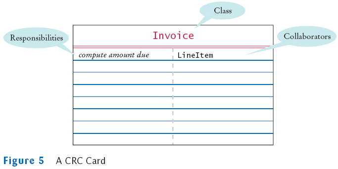
Self Check
- Suppose the invoice is to be saved to a file. Name a
likely collaborator.
- Looking at the invoice in Figure 4, what is a likely
responsibility of the Customer class?
- What do you do if a CRC card has ten responsibilities?
Answers
- FileWriter
- To produce the shipping address of the customer.
- Reword the responsibilities so that they are at a higher level,
or come up with
more classes to handle the responsibilities.
Relationships Between Classes
- Inheritance
- Aggregation
- Dependency
Inheritance
- Is-a relationship
- Relationship between a more general class (superclass) and
a more specialized class (subclass)
- Every savings account is a bank account
- Every circle is an ellipse (with equal width and height)
- It is sometimes abused
- Should the class Tire be a subclass of a class Circle?
- The has-a relationship would be more appropriate
Aggregation
- Has-a relationship
- Objects of one class contain references to objects of another
class
- Use an instance variable
- Every car has a tire (in fact, it has four)
Example
class Car extends Vehicle
{
. . .
private Tire[] tires;
}
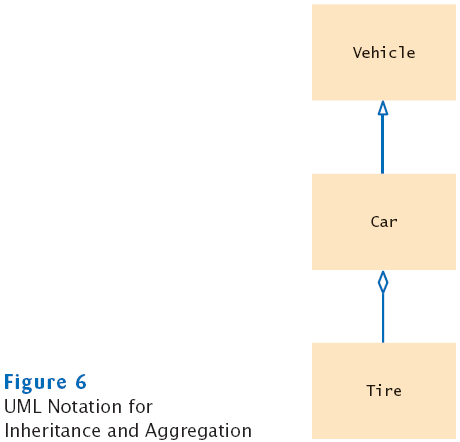
Dependency
- Uses relationship
- Example: many of our applications depend on the Scanner
class to read input
- Aggregation is a stronger form of dependency
- Use aggregation to remember another object between method calls
UML Relationship Symbols
| Relationship |
Symbol |
Line Style |
Arrow Tip |
| Inheritance |
|
Solid |
Triangle |
| Interface Implementation |
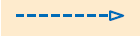 |
Dotted |
Triangle |
| Aggregation |
|
Solid |
Diamond |
| Dependency |
|
Dotted |
Open |
Self Check
- Consider the Bank and BankAccount
classes of Chapter 7. How are they related?
- Consider the BankAccount and SavingsAccount
objects of Chapter 12. How are they related?
- Consider the BankAccountTester class of Chapter 3.
Which classes does it depend on?
Answers
- Through aggregation. The bank manages bank account
objects.
- Through inheritance.
- The BankAccount, System, and PrintStream
classes.
Advanced Topic: Attributes and Methods in UML Diagrams
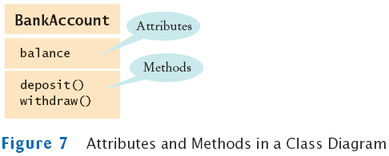
Advanced Topic: Multiplicities
- any number (zero or more): *
- one or more: 1..*
- zero or one: 0..1
- exactly one: 1
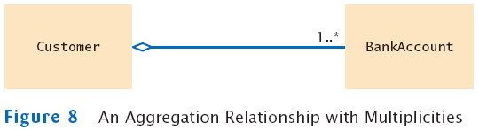
Aggregation and Association
- Association: more general relationship between classes
- Use early in the design phase
- A class is associated with another if you can navigate from
objects of one class to objects of the other
- Given a Bank object, you can navigate to Customer
objects
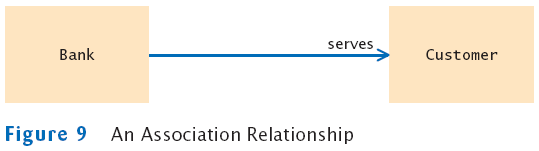
Five-Part Development Process
- Gather requirements
- Use CRC cards to find classes, responsibilities, and collaborators
- Use UML diagrams to record class relationships
- Use javadoc to document method behavior
- Implement your program
Printing an Invoice – Requirements
- Task: print out an invoice
- Invoice: describes the charges for a set of products in certain
quantities
- Omit complexities
- Dates, taxes, and invoice and customer numbers
- Print invoice
- Billing address, all line items, amount due
- Line item
- Description, unit price, quantity ordered, total price
- For simplicity, do not provide a user interface
- Test program: adds line items to the invoice and then prints it
Sample Invoice
I N V O I C E
|
| Sam's Small Appliances |
|
|
|
|
| 100 Main Street |
|
|
|
|
| Anytown, CA 98765 |
|
|
|
|
| |
|
|
|
|
| Description |
|
Price |
Qty
|
Total |
| Toaster |
|
29.95 |
3
|
89.85 |
| Hair dryer |
|
24.95 |
1
|
24.95 |
| Car vacuum |
|
19.99 |
2
|
39.98 |
| |
|
|
|
|
| Amount Due: $154.78 |
|
|
|
|
Printing an Invoice – CRC Cards
Printing an Invoice – CRC Cards
- Analyze classes
Invoice
Address
LineItem // Records the product and the quantity
Product
Description // Field of the Product class
Price // Field of the Product class
Quantity // Not an attribute of a Product
Total // Computed–not stored anywhere
Amount Due // Computed–not stored anywhere
- Classes after a process of elimination
Invoice
Address
LineItem
Product
CRC Cards for Printing Invoice
Invoice and Address must be able to format
themselves:
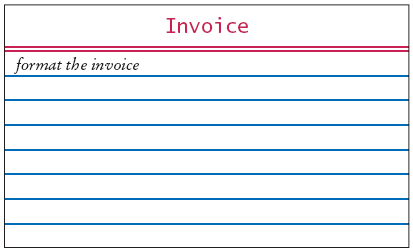 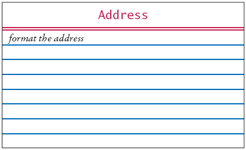
CRC Cards for Printing Invoice
Add collaborators to invoice card:
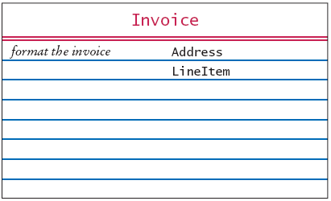
CRC Cards for Printing Invoice
Product and LineItem CRC cards:
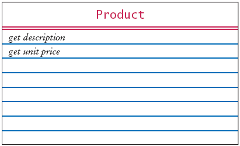 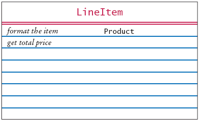
CRC Cards for Printing Invoice
Invoice must be populated with products and quantities:
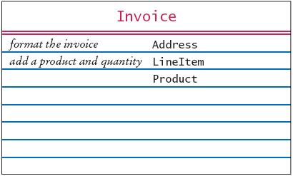
Printing an Invoice – UML Diagrams
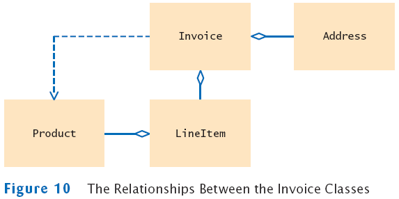
Printing an Invoice – Method Documentation
- Use javadoc documentation to record the behavior of the
classes
- Leave the body of the methods blank
- Run javadoc to obtain formatted version of
documentation in HTML format
- Advantages:
- Share HTML documentation with other team members
- Format is immediately useful: Java source files
- Supply the comments of the key methods
Method Documentation – Invoice class
/**
Describes an invoice for a set of purchased products.
*/
public class Invoice
{
/**
Adds a charge for a product to this invoice.
@param aProduct the product that the customer ordered
@param quantity the quantity of the product
*/
public void add(Product aProduct, int quantity)
{
}
/**
Formats the invoice.
@return the formatted invoice
*/
public String format()
{
}
}
Method Documentation – LineItem class
/**
Describes a quantity of an article to purchase and its price.
*/
public class LineItem
{
/**
Computes the total cost of this line item.
@return the total price
*/
public double getTotalPrice()
{
}
/**
Formats this item.
@return a formatted string of this line item
*/
public String format()
{
}
}
Method Documentation – Product class
/**
Describes a product with a description and a price.
*/
public class Product
{
/**
Gets the product description.
@return the description
*/
public String getDescription()
{
}
/**
Gets the product price.
@return the unit price
*/
public double getPrice()
{
}
}
Method Documentation – Address class
/**
Describes a mailing address.
*/
public class Address
{
/**
Formats the address.
@return the address as a string with three lines
*/
public String format()
{
}
}
The Class Documentation in the HTML Format

Printing an Invoice – Implementation
- The UML diagram will give instance variables
- Look for associated classes
- They yield instance variables
Implementation
Implementation
Implementation
- The methods themselves are now very easy
- Example:
File InvoiceTester.java
File Invoice.java
File LineItem.java
File Product.java
File Address.java
Self Check
- Which class is responsible for computing the amount
due? What are its collaborators for this task?
- Why do the format methods return String objects instead
of directly printing to System.out?
Answers
- The Invoice class is responsible for
computing the amount due. It collaborates
with the LineItem class.
- This design decision reduces coupling. It enables us to reuse the
classes when
we want to show the invoice in a dialog box or on a web page.
An Automatic Teller Machine – Requirements
- ATM is used by bank customers. A customer has a
- Checking account
- Savings account
- Customer number
- PIN
An Automatic Teller Machine – Requirements
- Customers can select an account
- The balance of the selected account is displayed
- Then, customer can deposit and withdraw money
- Process is repeated until the customer chooses to exit
An Automatic Teller Machine – Requirements
- Two separate interfaces:
- GUI that closely mimics an actual ATM
- Text-based interface
An Automatic Teller Machine – Requirements
- GUI Interface
- Keypad
- Display
- Buttons A, B, C
- Buttons function depend on the state of the machine
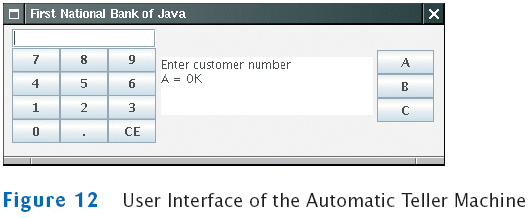
An Automatic Teller Machine – Requirements
- At start up the customer is expected to
An Automatic Teller Machine – Requirements
- The customer is expected to
- Enter a PIN
- Press A button.
- The display shows:
Enter PIN
A = OK
An Automatic Teller Machine – Requirements
- Search for the customer number and PIN
- If it matches a bank customer, proceed
- Else return to start up screen
An Automatic Teller Machine – Requirements
- If the customer is authorized
An Automatic Teller Machine – Requirements
- If the user presses C
- The ATM reverts to its original state
- ATM asks next user to enter a customer number
- If the user presses A or B
An Automatic Teller Machine – Requirements
- If the user presses A or B
- The value entered is withdrawn or deposited
- Simulation: no money is dispensed and no deposit is accepted
- The ATM reverts to previous state
- If the user presses C
- The ATM reverts to previous state
An Automatic Teller Machine – Requirements
- Text-based interaction
- Read input from System.in instead of the buttons
- Here is a typical dialog:
Enter account number: 1
Enter PIN: 1234
A=Checking, B=Savings, C=Quit: A
Balance=0.0
A=Deposit, B=Withdrawal, C=Cancel: A
Amount: 1000
A=Checking, B=Savings, C=Quit: C
An Automatic Teller Machine – CRC
CRC Cards for Automatic Teller Machine
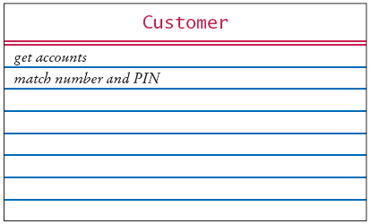
 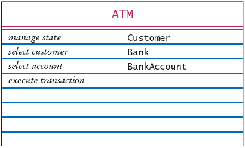
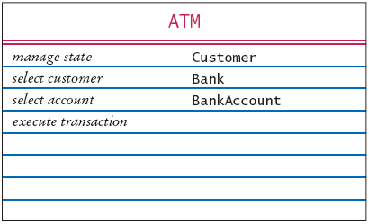
ATM States
- START: Enter customer ID
- PIN: Enter PIN
- ACCOUNT: Select account
- TRANSACT: Select transaction
State Diagram for ATM Class
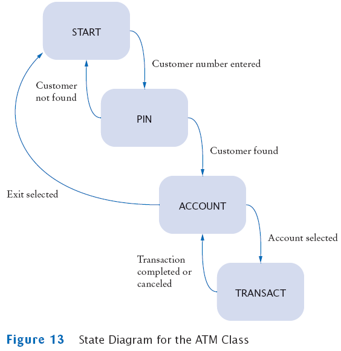
An Automatic Teller Machine – UML Diagrams
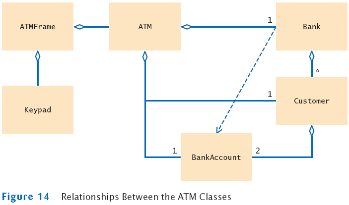
Method Documentation ATM Class
/**
An ATM that accesses a bank.
*/
public class ATM
{
/**
Constructs an ATM for a given bank.
@param aBank the bank to which this ATM connects
*/
public ATM(Bank aBank) { }
/**
Sets the current customer number and sets state to PIN.
(Precondition: state is START)
@param number the customer number
*/
public void setCustomerNumber(int number) { }
Method Documentation ATM Class (Continued)
/**
Finds customer in bank. If found sets state to ACCOUNT, else to START.
(Precondition: state is PIN)
@param pin the PIN of the current customer
*/
public void selectCustomer(int pin) { }
/**
Sets current account to checking or savings. Sets state to TRANSACT.
(Precondition: state is ACCOUNT or TRANSACT)
@param account one of CHECKING or SAVINGS
*/
public void selectAccount(int account) { }
/**
Withdraws amount from current account.
(Precondition: state is TRANSACT)
@param value the amount to withdraw
*/
public void withdraw(double value) { }
. . .
}
An Automatic Teller Machine – Implementation
- Start implementation with classes that don't depend on others
- Then implement Customer which depends only on BankAccount
- This bottom-up approach allows you to test your classes
individually
An Automatic Teller Machine – Implementation
An Automatic Teller Machine – Implementation
- Most methods are very straightforward to implement
- Consider selectCustomer:
/**
Finds customer in bank. If found sets state to ACCOUNT, else to START.
(Precondition: state is PIN)
@param pin the PIN of the current customer
*/
- Description can be almost literally translated to Java
instructions:
public void selectCustomer(int pin)
{
assert state == PIN;
currentCustomer = theBank.findCustomer(customerNumber, pin);
if (currentCustomer == null)
state = START;
else
state = ACCOUNT;
}
File ATM.java
File Bank.java
File Customer.java
File ATMViewer.java
File ATMFrame.java
File KeyPad.java
File ATMTester.java
Output
Enter account number: 1
Enter PIN: 1234
A=Checking, B=Savings, C=Quit: A
Balance=0.0
A=Deposit, B=Withdrawal, C=Cancel: A
Amount: 1000
A=Checking, B=Savings, C=Quit: C
. . .
Self Check
- Why does the Bank class in this example not
store an array list of bank accounts?
- Suppose the requirements change–you need to save the current
account balances
to a file after every transaction and reload them when the program
starts.
What is the impact of this change on the design?
Answers
- The bank needs to store the list of customers so that
customers can log in. We
need to locate all bank accounts of a customer, and we chose to simply
store
them in the customer class. In this program, there is no further need
to access
bank accounts.
- The Bank class needs to have an additional
responsibility: to load and save the
accounts. The bank can carry out this responsibility because it has
access to the
customer objects and, through them, to the bank accounts.